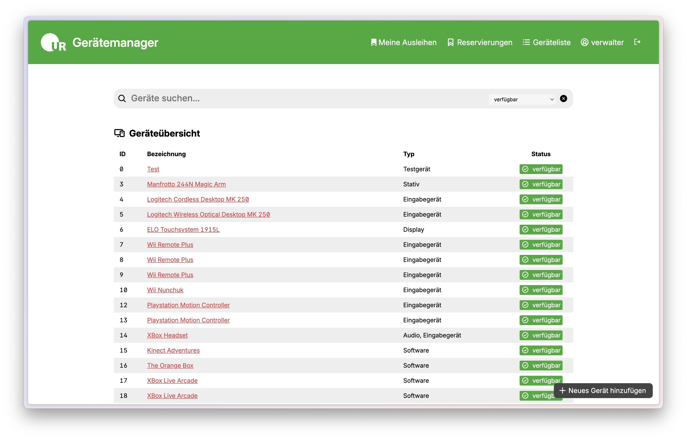
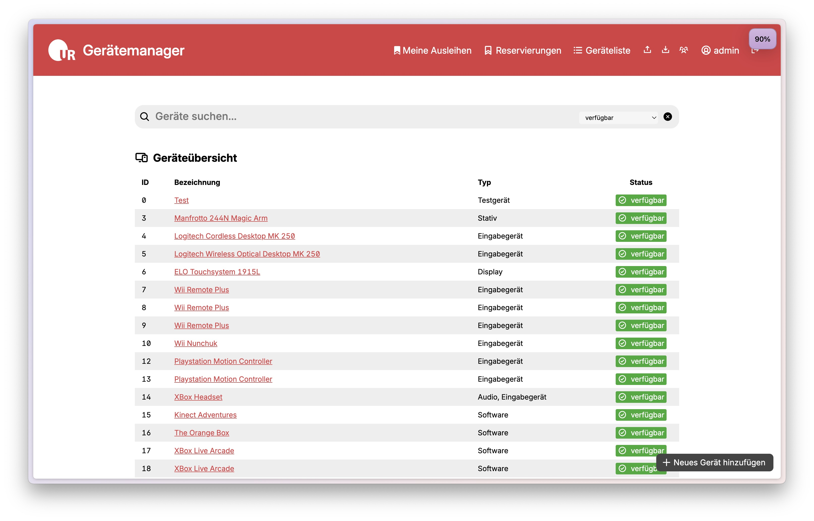
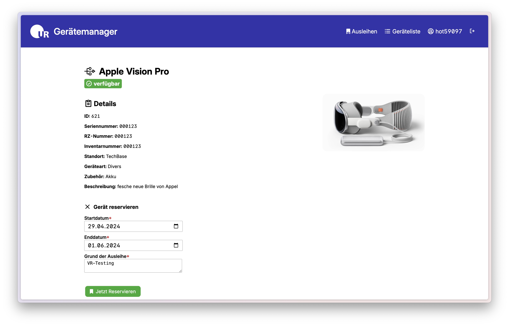
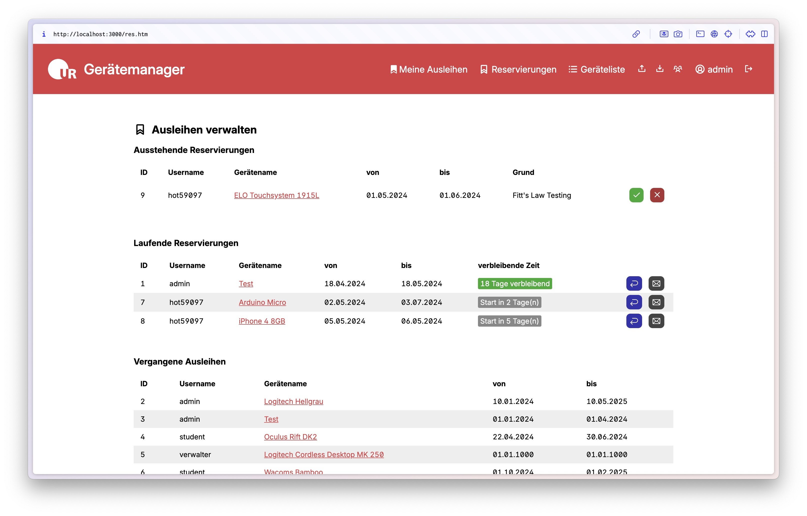

Full Stack Device Manager
Winter 2023/2024
Im Rahmen des Masterkurses Advanced Software Engineering entwickelte Full-Stack-Anwendung zum Verwalten von Geräten und Ausleihen von Geräten.
Als Back-End wurde eine SQLite-Datenbank mit SQLAlchemy über FastAPI innerhalb eines Docker-Containers verwendet, welches das Front-End (HTML/CSS) über axios befüllt.
Der simple Seitenaufbau orientiert sich am Wiki des Lehrstuhls. Manrope und Phosphor Icons verfeinern neben eigenem CSS die Darstellung.
Zur Entwicklung wurde mit User Stories und Anforderungslisten Requirements Management geplant und über GitLab strukturiert.
Interface
Drei verschiedene Nutzergruppen Administration, Verwaltung und Studierende haben verschiedene Berechtigungen und das User Interface wird der Rolle dynamisch angepasst.

Studis können nur ihre Ausleihen und die Geräteliste einsehen.
Verwaltungspersonen können die Reservierungen verwalten und Geräte bearbeiten.
Administrator:innen können das und zusätzlich Import, Export, und die Nutzerverwaltung einsehen.
Geräte können in der Liste per Freitextsuche und nach Status gefiltert gefunden werden. Für jedes Gerät wird nach dem Import (per CSV) oder manuellem Eintippen eine Einzelansicht mit weiteren Informationen und Möglichkeit zur Ausleihe angelegt.
Ausleihverwaltung
Ausleihen werden über die Tabelle Booking zwischen User und Device angelegt. So ist auch eine Historie pro User einsehbar.
Für Studierende werden Ausleihen erst genehmigt und dann nach Status mit Kontextinformationen gelistet
Administrator:innen oder Verwaltungskräfte können Ausleihen akzeptieren und wieder annehmen. Kommunikation zur Übergabe oder Rückgabe wird per Mail gelöst, ist aber zumindest für die Verwaltung mit einem einfachen Klick erreichbar.
Die Arbeit wurde mit 1,3 bewertet.